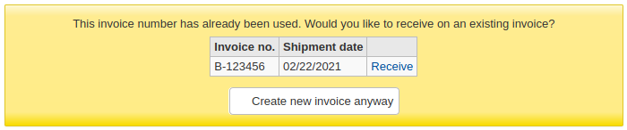

採訪
編輯器
編輯器
詢問： ___ 用於獲取電子數據的消息交換
預設值：啟用
值：
停用
啟用
說明：
這個系統偏好是打開或關閉Koha中電子數據功能的主要開關。
EdifactInvoiceImport
詢問: ___ 在下載電子數據發票訊息文件時，自動導入這些文件。
預設值：要
值：
做
不要
說明：
這項功能允許圖書館將EDI發票的匯入時間推遲到他們選擇的時間。如果系統偏好設置為 ‘不’，發票將被導入資料庫，但發票處理將被跳過。相反，在電子數據訊息中列出的任何狀態為 ‘新’ 的發票文件將有一個 ‘輸入’ 按鈕來手動處理發票。
EdifactLSQ
詢問：將序列代碼 (GIR:LSQ) 欄段映射到館藏中的 ___。
預設值：位置
值：
館藏
位置
說明：
EDItEUR將LSQ段描述為 “一個代碼或其他指定，用於識別要按特定順序或集合上架的庫存。” 在Koha中，這可以被解釋為物品的位置或收藏（ccode）。
這個系統偏好是用來向Koha表明這應該被映射到哪個欄位。
政策
AcqCreateItem
詢問：當 ___ 時，新增館藏。
預設值：下訂單
值：
編目紀錄
下訂單
簽收訂單
說明：
AcqEnableFiles
詢問：___ 啟用上傳與附加檔案至發票的功能。
預設值：不
值：
做
不要
說明：
此偏好控制你是否允許通過收購模組上傳發票文件<attaching-files-to-invoices-label>`。
AcqItemSetSubfieldsWhenReceiptIsCancelled
詢問：取消在發出訂單時產生的收條 (如 o=5|a=”bar foo””)，則需更新館藏的分欄。___
說明：
This preference is used in conjunction with the AcqItemSetSubfieldsWhenReceived preference. If you have the system set to enter default values when you receive you will want to have those values revert back if the receipt is canceled. This preference allows you to do that.
AcqItemSetSubfieldsWhenReceived
詢問：簽收在發出訂單時產生的館藏 (如 o=5|a=”foo bar”)，則需要更新其分欄。___
說明：
此偏好設定經由採訪取得館藏的預設值。鍵入的格式為分欄=值並以直線 ( | ) 區隔多筆分欄。如：鍵入 7=0，表示收到館藏時，自動移除館藏的訂購狀態。將把不外借狀態 (分欄 7 ) 設為 0，表示可外借。
AcqViewBaskets
詢問：顯示採訪籃 ___
預設：由館員新增或管理
值：
系統內新增，包括所有的擁有者
來自館員的圖書館
由館員建立或管理
說明：
在採訪時，這個偏好允許你控制在查看供應商時可以看到誰的籃子。
預設值 ‘由館員創建或管理’ 使你只能看到你建立的籃子。
選擇查看 ‘來自館員圖書館’ 的籃子，將顯示你所登錄的分行機構的任何人所建立的籃子。
最後，你可以選擇將此偏好設定為向你顯示所有的籃子，無論它是誰建立的（’在系統中，無論所有者是誰’）。
無論你為這個偏好選擇哪個值，超級圖書館員都可以看到系統中建立的所有籃子。
AcqWarnOnDuplicateInvoice
詢問：___ 當圖書館員以重複的號碼新增收據。
預設值：不警示
值：
不警示
警示
說明：
當設置為 ‘警告’ 時，Koha會讓館員知道是否已經建立了相同號碼的發票。館員可以選擇在現有的發票上接收，或者用相同的號碼建立一個新的發票。

BasketConfirmations
詢問：關閉或再打開採購籃時，___。
預設值：總是要求確認
值：
總是要求確認
不要求確認
說明：
關閉或再打開採購籃時由此偏好控制是否確認。若略過確認，則不能新增採購籃群組。
ClaimsBccCopy
答：___ 以密件收件人 (BCC) 方式送出期刊或採旁通知。
預設值：不送出
值：
不送出
寄送
說明：
CurrencyFormat
詢問： 使用下列格式顯示金額 ___
預設值：360,000.00 (美元)
值：
360’000.00 (CH)
360 000,00 (法國法郎)
360,000.00 (美元)
說明：
這個系統偏好控制價格在Koha中的顯示方式。
EmailPurchaseSuggestions and EmailAddressForSuggestions
詢問: 選擇新的購買建議將被發送到的電子郵件地址: ___。 如果您選擇EmailAddressForSuggestions，您必須輸入一個有效的電子郵件地址: ___
預設值：無
值：
沒有
email address of library
EmailAddressForSuggestions
KohaAdminEmailAddress
說明：
如果你想讓Koha通過電子郵件寄送購買建議，請選擇它應該將建議寄送到哪個電子郵件地址
沒有將停用該功能
email address of library will use the email address entered in the libraries settings
如果您選擇EmailAddressForSuggestions，請在輸入欄中輸入電子郵件地址
if you choose KohaAdminEmailAddress, the email will be sent to the main email address, as entered in KohaAdminEmailAddress
你可以自定義用 :ref:`通知和單據工具<notices-and-slips-label>`發送的訊息，字母代碼為NEW_SUGGESTION
MarcFieldsToOrder
詢問：於待處理檔案的 MARC 紀錄設定對映值供新增訂閱列使用。
說明：
這個偏好包括MARC欄位，當你 :ref:`從新的.mrc文件訂購<order-from-a-new-file-label>`或當你 :ref:`從採訪中的staged文件訂購<order-from-a-staged-file-label>`時，檢查訂購訊息的使用。你可以使用以下欄位:
價格，
數量，
預算_代碼，
折扣，
排序1，和
排序2。
範例：
price: 947$a|947$c quantity: 969$h budget_code: 922$a
警告
需要YAML語法才能執行
這表示
確保欄段名和冒號之間沒有空格
請確保在冒號和數值之間有一個空格
確認每組都在同一列中
MarcItemFieldsToOrder
詢問：於待處理檔案的 MARC 紀錄設定對映值供新增訂閱列使用。
說明：
這個偏好在Koha中自動生成館藏，並根據9XX欄位和分欄填入訊息。你可以使用以下欄位:
所屬分館，
holdingbranch,
類型，
非公開_說明,
公開_說明，
loc,
ccode,
notforloan,
uri,
copyno,
價格，
replacementprice, 和
itemcallnumber.
你也可以使用以下特殊欄位:
數量, 和
預算_代碼。
範例：
homebranch: 975$a
holdingbranch: 975$b
public_note: 975$z
loc: 975$c
警告
需要YAML語法才能執行
這表示
確保欄段名和冒號之間沒有空格
請確保在冒號和數值之間有一個空格
確認每組都在同一列中
OrderPriceRounding
詢問：___ 到最近的分值。
預設值：不捨入
值：
不捨入
捨入
說明：
這個系統偏好計算價格時採用全值或進位。
當你的稅率比你的貨幣有更多的小數時，這一點尤其重要
PurgeSuggestionsOlderThan
詢問：在 ___ 日內持續接受或拒絕採訪建議。
警告
如果你不想啟用這個自動功能，就把這個欄位留空。
說明：
輸入日數，就能在該期限內自動接受或拒絕採訪建議。
例如：[30] 設定對超過 30 天的清除建議。
备注
天數是基於 ‘管理日’ 的日期。
這個系統偏好要求工作排程 :ref:`清除_建議.pl <cron-clean-up-old-suggestions-label>`處於啟用狀態，並在沒有特定天數（’–天數’參數）的情況下調用。
稅率
詢問：稅率是___
預設值：0
說明：
這一優惠政策允許圖書館定義採訪的商品和服務稅率。
列表中的第一個館藏的選擇將被預設。
备注
以小數輸入此值 (.06)，不要用百分比符號 (6%)。
對於多個值，用 | (豎槓)分隔 。
範例
0|0.05|0.1496
你可以選擇0%、5%和14.96%的稅率
警告
資料庫只接受4位小數以內的數值，更多的數值將被四捨五入。
UniqueItemFields
詢問：以下資料庫列在館藏中應該是唯一的：___
預設值：條碼
說明：
若此偏好空白，採訪新增館藏時，將不檢查館藏的唯一性。也就是條碼號可能重複出現在多筆館藏記錄裡，將來借出與還入時，必然出現問題。
UseACQFrameworkForBiblioRecords
詢問：___ 供書目記錄欄位 ‘ACQ’ 框架使用
預設值：不使用
值：
不使用
使用
說明：
此系統偏好允許您使用 :ref:`ACQ書目框架<marc-bibliographic-frameworks-label>`客製化採訪模組訂單的書目紀錄欄位
請注意，這並不影響館藏欄位（在MARC21中，欄位952），無論這個系統的偏好如何，這些欄位總是取自ACQ框架
列印
OrderPdfFormat
詢問： 使用佈局 ___ 佈局列印採購籃群組。
預設：英文 3-頁
值：
备注
值將取決於你的Koha安裝中所安裝的語言。
1-page
2-頁
3-頁
說明：
這個偏好決定了在輸出PDFs時如何影印 購物籃組。
A 1-page layout will have vendor information and ordered titles on the same page
2-頁的版面將在第一頁提供供應商訊息，在第二頁提供訂購的標題
A 3-page layout will additionally have a page with basket information